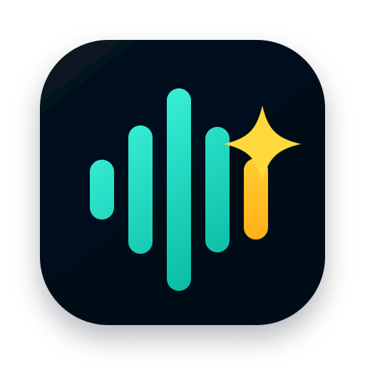

把说出来的话，变成能直接发送的文字。
SpeakMore 可以在聊天、邮件、笔记、文档和网页输入框中工作。把光标放好，按住 Control 说话，松开后它会识别、整理、翻译或润色，并把最终文字写回当前应用。
1. 安装 SpeakMore
双击下载得到的 .dmg 安装包。打开后会看到 SpeakMore-多说有益.app 和 Applications 快捷入口。
把 SpeakMore-多说有益.app 拖到 Applications。之后从 Launchpad 或 Finder 的 Applications 里启动。
如果 macOS 提示来自未验证开发者，请在系统设置的隐私与安全性里允许打开，或右键应用选择“打开”。
2. 首次打开流程
第一次启动后，SpeakMore 会打开固定尺寸的新手引导窗口。窗口会介绍它能做什么、如何按住 Control 说话、如何选择模式，以及需要哪些权限和 API Key。
引导页只在首次安装后自动出现。之后可以在设置页的“入门教程”里重新打开。
点“开始配置”后进入设置页。保存成功后，设置窗口会自动关闭。
必须允许的系统权限
- 麦克风权限：用于录入你的声音。
- 辅助功能权限：用于监听全局快捷键、读取选中文字和把结果写回当前输入框。
3. API Key 与模型配置
设置页分成“语音识别”和“AI 整理”两块。语音识别负责把声音实时转成文字，AI 整理负责润色、翻译、分点、改写和处理选中文字。
| 配置项 | 默认值 | 作用 |
|---|---|---|
| 语音服务 | 阿里云百炼实时 | 把语音实时识别为文字。 |
| 语音模型 | qwen3-asr-flash-realtime-2026-02-10 |
默认实时 ASR 模型。 |
| AI 服务 | 阿里云百炼 | 处理最终文字，包括整理、翻译、润色和问选中文字。 |
| AI 模型 | qwen3.6-flash |
默认低延迟文本整理模型。 |
| 高级配置 | 模型与接口地址 | 默认折叠。只有换服务商、自定义模型或排查问题时需要打开。 |
4. 日常使用
例如微信、Slack、邮件、飞书、Notion、浏览器输入框或任意文本编辑器。
默认需要长按约 0.5 秒，避免误触。浮动窗口出现后开始说话即可。
松开后 SpeakMore 会等待语音识别结果，并在需要时调用 AI 整理。最终文字会自动写入当前输入框。
可以直接说的撤回命令
如果刚刚插入的内容有问题，可以再次呼出 SpeakMore，说自然语言撤回命令：
删除刚才那段、撤回刚刚输入的内容：撤回上一次 SpeakMore 插入的整段内容。删除上一句话、把刚才那句话删掉：只撤回上一次插入内容里的最后一句。
5. 五种模式怎么选
默认推荐。自动判断是普通听写、整理、分点、润色、英文纠错还是轻量翻译。
轻度清理口语，尽量保留原话。适合快速写聊天消息和笔记。
先整理中文结构，再翻译成设置里的目标语言，避免把口误和断句错误直接翻译出去。
把粗糙口语变成更清楚、可发送的文字。适合发客户、写邮件和整理表达。
先选中文字，再呼出 SpeakMore。可以说“总结一下”“翻译成英文”“帮我改得更自然”。
6. 快捷键与语言
默认快捷键
默认是长按 Control。可以在设置页的“快捷键”里改成其它组合键，也可以选择“按住说话”或“按一次开始、再按一次结束”。
录音中快速切换模式
正在说话时，可以继续按住 Control 并按数字键切换模式：
界面语言
可以在菜单栏或设置页切换界面语言。设置页、菜单栏面板、浮动窗口和服务商菜单会跟随选择更新。
7. 语音质量与响应速度
录音窗口右下角会显示两个状态灯：输入音量和环境噪音。它们只用于提示录音质量，不会改变你说话的内容。
绿色表示合适。偏低时会逐渐变橙，提醒你靠近麦克风或稍微提高音量。
绿色表示背景干净。噪音高时会变橙或偏红，建议换到更安静的位置。
识别不准时先检查这几件事
- 离 Mac 太远，输入音量偏低。
- 火车、风扇、空调或会议室背景声太大。
- 说话太快，中间有大量口误、重复和改口。
- 网络不稳定，导致实时识别或 AI 整理延迟。
8. 常见问题排查
| 现象 | 可能原因 | 处理方式 |
|---|---|---|
| 按住 Control 没反应 | 辅助功能权限未打开，或快捷键被其它软件占用。 | 打开系统设置里的辅助功能权限；也可以在 SpeakMore 设置页换一个快捷键。 |
| 听不到声音或没有识别 | 麦克风权限未允许，或输入设备不对。 | 检查系统麦克风权限和声音输入设备；重新启动 SpeakMore 后再试。 |
| 识别内容不准 | 声音太小、背景噪音高、语速太快或网络不稳定。 | 靠近麦克风、换安静环境、放慢语速，观察右下角状态灯。 |
| 显示网络异常 | 启动前断网或说话中网络断开。 | 联网后重试。如果说话中断网，已识别的内容会尽量先插入输入框。 |
| 文字没有自动写入 | 辅助功能权限不足，或当前应用不允许自动粘贴。 | 确认辅助功能权限；把光标重新放到输入框；必要时复制浮动窗口里的最终文字。 |
| 设置保存后窗口关闭 | 这是当前设计。 | 保存成功后设置自动生效并关闭。需要再改时，从菜单栏重新打开设置。 |
9. 隐私与数据边界
- SpeakMore 不保存原始录音。
- 历史记录默认关闭。
- 语音识别和 AI 整理会把必要的音频或文字发送给你配置的服务商。
- API Key 只应保存在你自己的电脑或你信任的服务端代理里，不要发给他人。
- “对选中文字提问”会读取你当前选中的文字，并把它作为 AI 处理上下文。